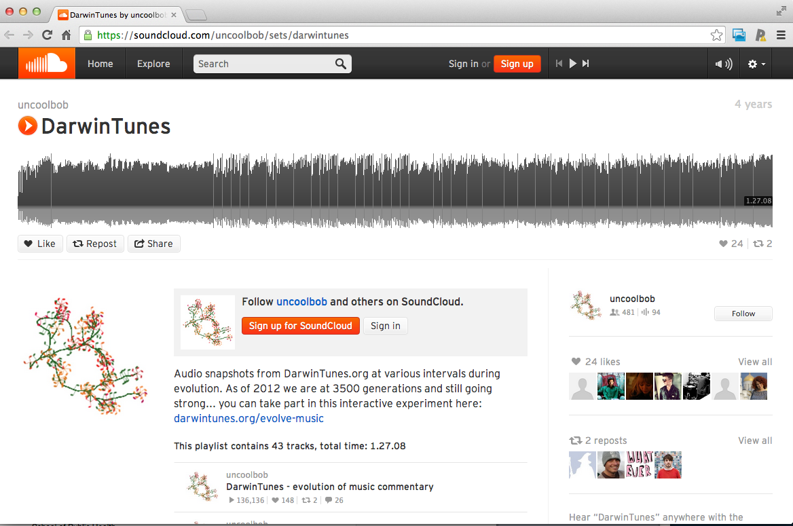

Data are values of qualitative or quantitative variables, belonging to a set of items.
What is data?
Jeffrey Leek
Johns Hopkins Bloomberg School of Public Health
Definition of data
Definition of data
Data are values of qualitative or quantitative variables, belonging to a
http://en.wikipedia.org/wiki/Data
Set of items: Sometimes called the population; the set of objects you are interested in
Definition of data
Data are values of qualitative or quantitative
http://en.wikipedia.org/wiki/Data
Variables: A measurement or characteristic of an item.
Definition of data
Data are values of
http://en.wikipedia.org/wiki/Data
Qualitative: Country of origin, sex, treatment
Quantitative: Height, weight, blood pressure
What do data look like?

http://brianknaus.com/software/srtoolbox/s_4_1_sequence80.txt
What do data look like?

What do data look like?

What do data look like?
What do data look like?

http://www.pnas.org/content/109/30/12081.full https://soundcloud.com/uncoolbob/sets/darwintunes
What do data look like?
What do data look like? Rarely

The data is the second most important thing
- The most important thing in data science is the question
- The second most important is the data
- Often the data will limit or enable the questions
- But having data can't save you if you don't have a question